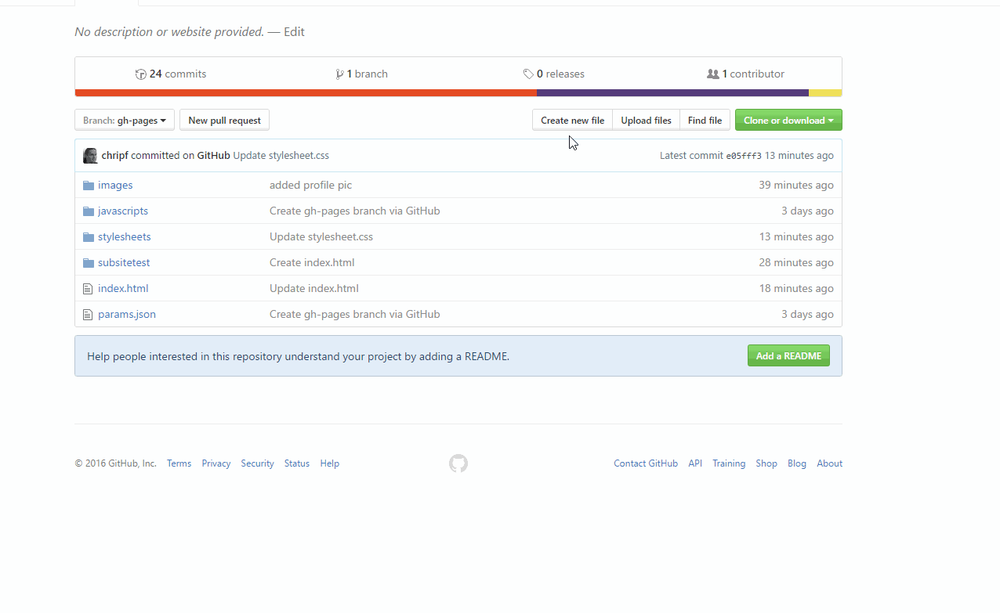

Eine Beispielseite
Auf dieser Seite habe ich versucht mal ein Beispiel zu erstellen, wie eine Lösung zu eurer Aufgabe aussehen kann. Den "Code" dazu findet ihr im entsprechenen Github-Projekt.
Das meiste dürfte euch bekannt vorkommen, einige Elemente sind neu:
<section>
<header>
Hier hinein kommen die Links zu den Unterseiten.
Ein paar Links in einer Liste.
Anleitung zum erstellen von Unterseiten
Auf der Github-Webseite könnt ihr zwar nicht direkt Ordner erstellen, ihr könnt aber bei einer neuen Datei einen entsprechenden Pfad angeben. Das geht so:
Schöne, lange Kletterrouten
Ein Beispiel für eine Tabelle. Tabellen sind in HTML recht mühsam zu schreiben, es gibt aber ganz brauchbare Tools dafür - auch online, z.B. dieser Tabellengenerator.
| Route | Schwierigkeit | Länge | Charakter |
|---|---|---|---|
| Badile N-Kante | 5 | 1000m | lange alpine Tour, großteils selbst abzusichern |
| Pordoispitze NW-Wand "Fedele" | 4+ | 800m | Lange alpine Tour, großteils selbst abzusichern. Tw. schwierige Wegfindung. |
| Martinswand "Direkte" | 6+/A0 - frei ca. 8 | 350m | Gut abgesicherte, steile Kletterei. Der Ausstieg ist recht bröslig. |